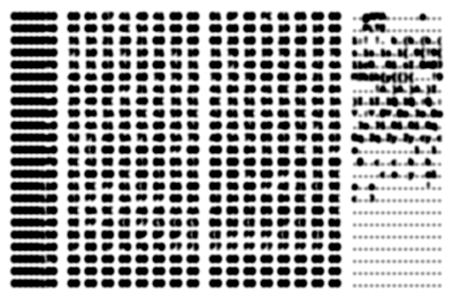

ais523 (2011) As the creator of languages like Underload, and an administrator of the esolangs.org wiki, ais523 talks through what makes esolangs interesting and challenging vs thematic and gimmicky.
ais523 (2017) In this second interview with ais523, we discuss his experiments at finding 'the essense of programming,' using analog computing, extreme minimalism, and a deletionist model of computation
Alex McLean Alex was a key developer of live coding as a musical practice, and, with Nick Collins, created the Algorave concept. Alex has developed software for coding-as-performance, including TidalCycles.
Annie Dorsen Annie's work brings engagement with code to theatre, with experimental works where performers (human and non-) act on generated music or texts.
Ben Olmstead Ben is an early esolanger, whose Malbolge, a language created in a single afternoon, is still considered the most challenging to code; he gives insight into the early days of esolangs.
Chris Pressey Chris has been making esolangs before they had a name; he helped foster the community through the mailing list where much of the early discussion took place, and is responsible for the enormously influential Befunge language, among many others.
David Morgan-Mar David has created some of the best-known esolangs, including Chef and Piet, which exress code within other rule-based systems, and Whenever, a language that overturns a key element of how code is controlled.
Eric S. Raymond Eric, best known for his work in the open source movement, is also responsible for developing C-INTERCAL in 1990, a critical moment for esolangs, from the 70s language INTERCAL, perhaps the very first esolang
Keymaker Keymaker created one of my favorite languages, Unnecessary. In this, the very first interview for esoteric.codes (from January 2011), Keymaker discusses his work in esolanging and in brainfuck programming
Martin Kleppe Martin created (or, in a sense, discovered) JSFuck, an esoteric approach to JavaScript. His other work similarly deals with code as a self-referential medium.
Ramsey Nasser Ramsey explores alternate computer histories and examines the biases of code through his languages and environments
Scott Feeney Scott founded esolangs.org, the indepensible depository of esolang knowledge. Here he talks about the history of the form and the key role esoprogrammers play.
Wouter van Oortmerssen Wouter created FALSE, the language which inspired Befunge and brainfuck, launching esolangs as we know them today. He also created the once-enormously-popular (non-esoteric) Amiga E language.
A Programming Language With Only One Command and the Anti-Imperialist Operating System Built on it DawnOS and SUBLEQ
Lessons From Early AI: On Cognition and Reasoning A look at early AI, another interface between computation and human understanding
Exercises in Programming Style Tackling the same programmatic problem in many different approaches, from the practical to the very strange
The Less Humble Programmer When personal style and overt cleverness are the point: esolanging, code golf, and obfuscated code as a counterpoint to Dijkstra
 The Restrained Voice of Code Do we not express emotional content in code or do we just not see it?
Executing Code off the Machine Programming languages as logic-based systems that are not necessarily on the machine
Vocabulary-Oriented and Behavior-Oriented Esolangs Esolangs with a focus on the look of code tend to get dismissed as uninteresting
Esolangs as an Experiential Practice We experience esolangs in an active way; usually by writing code
Brainfuck Programming: How to write the number 36, Part 1 An easy introduction to how to think in brainfuck
Checkout A language allowing programmers to choose how close to the machine their code runs; much control they need. Discussed in terms of Spolsky and Kittler
JSFuck An initial look at the esoteric coding style for JS (be sure to also see the interview with its creator, Martin Kleppe)
brainfuck Originally published in NMC Media-N Journal Programming languages are perhaps the most direct conduit between human and machine: here our commands translate into machine instructions. Brainfuck, a programming language created in 1993, uses this process of translation to explore the breakdown of communication and expose how computers train us to think.
Language Without Code: Intentionally Unusable, Uncomputable, or Conceptual Programming Languages Originally published in Journal Of Science And Technology Of The Arts Most esolangs are experiential works; we understand the languages by writing code in them. Through this action, the logic of the language becomes clear. However, a smaller subset of esolangs make their point not through actively writing code, but instead by simply contemplating their rules. We can think of these esolangs as conceptual rather than experiential. Some are designed in such a way that they don't allow any code to be written for them at all. By stepping away from usability, the conceptual esolangs offer the most direct challenge to the definition of programming language, a commonly used term which is surprisingly unspecific, and usually understood through utility, despite the fact that programming languages predate digital computers.